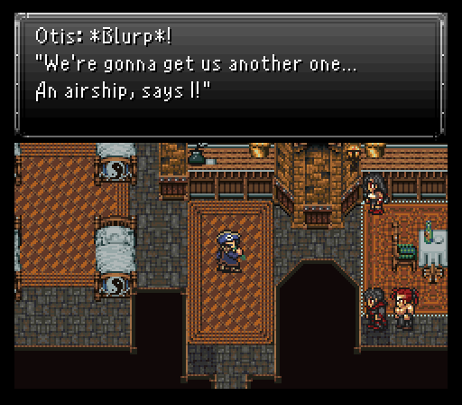
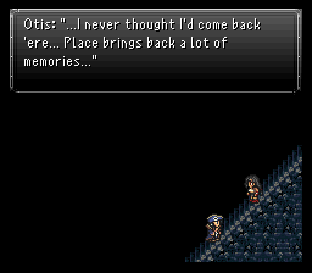
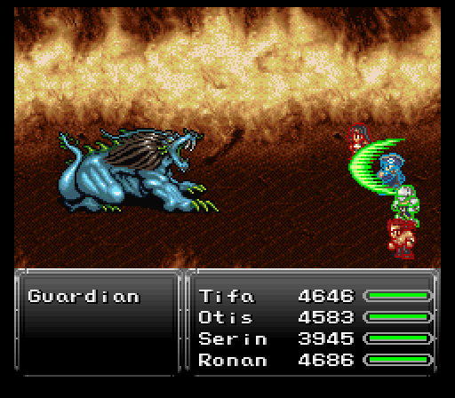
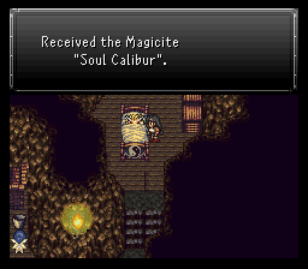
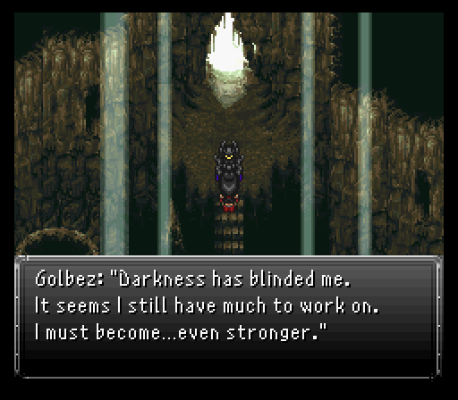

Part 20: The Freebird
Into the tomb:
The team enters Quartz Village where someone very important is waiting. If Zeke is in your party, he leaves...and not a moment too soon because in the pub is our favorite pirate dragoon Otis. He's in a bit of a depression, but Tifa is a hell of a mediator and gets him to snap out of it (and really, if she's calling you a godsdamn captain, you know she has the utmost faith in you).
Otis's first sign of awesomeness? He knows where a new fangled airship is. The team will need to travel to Evonne's grave, but there's a couple things to check out in town first, both at Jasper's abode in the northeast.
First, there's a valuable Golden Apple in one of the barrels outside. Secondly, Jasper mentions that Cloud's searching the world for a treasure that restores life. He just can't give up on Aerith, can he? At the very least we know he's alive.
When you're ready to head to Evonne's grave, head directly south from Quartz Village and you'll run into it. Before diving in too deep, make sure at least one or two people are given Holy Amulets. Also make a mental note that the Coliseum has also survived the apocalypse and is located on the southeast portion of the continent. We'll be visiting there soon enough.

The overall enemy theme here is lots of zombie inflicting jerks... Hell Barons and Cacodemons make a return, which we fought during the Ancient Castle flashback. Then we have the ultimate oddity of monsters from FF7, the Ghirofelgo. And of course an abundance of Phantoms and Poes, which any good tomb should be chock-full of. I bulldoze through a Phantom as I go into a room in the southeast from the main hallway. After switching my equipment around so three of my four people have pig immunity, I open a chest to find a monster inside...a boss monster that is.

This boss monster is Fireweaver's cousin from the beginning of the game, Broodfiend. First and foremost, if it proves to be too difficult or time-consuming, you can always come back later when you're stronger - there is no shame in putting it on ice for now. Speaking of ice, Broodfiend's body absorbs it and is weak to both fire and wind. The head, however, absorbs ice and poison while being weak to lightning. Contrary to how the Fireweaver battle was, you won't be able to target the Broodfiend's body until the head is removed.
Broodfiend tends to lean towards some mass poison inflicting with the likes of Nether Shot. Doesn't seem like much, but that poison damage can really add up if you ignore it for an extended amount of time. Thankfully this can be negated by casting Mute (or summoning Terra) on the head, as it is suceptable to Silence, and also Blind, which Serin can apply via his Psycho Blade Aether. So you can really cripple the hell out of the head...at least until it reanimates after being removed.
The body will also use Plague on the head every so often to heal. The head's special attack, Feast, also drains hp back to it. One other important thing to note, if you hit the body with eight fire spells or attacks (its weakness), it will then cast the highest level ice spell, Blizzard. The head has the same gimmick if you use eight holy-elemental attacks, such as Aura Blast, but only casts Plague on the party, which isn't nearly as dangerous.
Besides that, there's not much else to worry about. Psychokinesis is its physical skill and it can sting quite a bit for frontliners, but it shouldn't be too hard to heal that up. Just summon Fenrir early on, or right after silencing the head, and put Serin and Otis in the back row since Otis will be jumping most of the time, and Serin using Catastrophe.
All in all, not a really hard fight, but it is very long since only the head can be targeted at first. After depleting the head's hp, it retreats into the carapace and said carapace will spaz out. Namely, it'll secretly gain Haste and start performing multiple attacks per turn. Dispel the Haste away and then dish out as much damage to the carapace until the head shows back up and repeat the process.
For dealing with the long fight, you get a very nice armor in the Chaos Plate.
Returning to the skies:
Time to actually explore the catacombs and get all the sweet loot inside.
First up, we've got the armor picked up at the end of the last segment, the Chaos Plate. Has a speed penalty, but makes up for it tenfold with very good defenses, 10 point boosts to evade & magic evade, absorbs holy, and nullifies wind.
The dungeon is pretty simplistic overall. Just involves some minor switch hitting in order to raise some water levels enough to hitch a ride on some turtles. Start by going to the upper right room and searching the cross, which opens the door in the back where there is a switch to press which raises the water.

There is one minor detour you can make....after taking a ride on the first turtle, there's a room with four tombstones to your south. Each tombstone has a word etched on it, but spelled backwards. Once you've checked all four, hop back on the first turtle, then exit the room and check out the northwestern door. Another tombstone inside, but this one you can do your own message etching. Arrange the four backwards spelled words to spell out the saying that true love never dies (and it doesn't!).
With that settled, exit the room, head south through the door and down the stairs. There's a hidden passage that's now open to let you reach a curious relic, the Birdo Egg. Very useful since it doubles exp gained for the wearer.

From here, go up through the door and press the switch. Now go back up and press the switch to raise the water and ride the turtle accross. When you hit the save point room, make sure to grab the two chests as both have nice equipment inside (Dragon Helm and the Eiko only Fairy Robe). Proceed north into the next room and, when you hit the very decorated tombstone, make sure everyone is floating. Upon examining it, there's a rumbling and the next boss comes waddling in, Epitaph.

The reason for everyone floating gets made apparent right away with Epitaph opening the fight by using Magnitude Eight. It also has Quake available which float helps you avoid.
Besides that, it mostly sticks to single target strikes like its powerful physical skill Earth Crusher or magical variant Holy. Being a sizable stone statue has its advantages, as its normal strikes are no slouch either, so you'll want to cast Protect on any frontliners. The only other notable attacks are Rock Slide and Black Shock. When it's getting low on hp it will use Reflect on itself.
Other than that? Rather easy fight. Serin using Psionic Wave managed to get a water weakness onto the boss which meant Otis could swap to a pair of Ocean Spears and completely wreck the boss alongside Ronan. You could also use Psycho Blade to inflict Blind on it. And while it didn't have much of a chance to use it on me, it can use Soul Drain, which is a highly annoying uncurable continuous hp drain to allies.
The giant hulking tablet ends up handing over an Exodus Token relic (blocks instant death magic), then a door opens behind the tombstone. Head through the door when you're ready.
Tip: On the easier difficulties, you can quite simply use a Tissue on Epitaph ala FF9 to instantly kill it! What follows is a bunch of cutscenes showing Otis and his relationship to fellow sky pirate Evonne. When the wreckage of her ship was found in a distant land, Otis restored it and somehow managed to store it under the ocean. This ship, the Freebird, rises once more to help the team get another shot at Zuriel to kick his rear once and for all.
Make sure that before you go flying around anywhere, to land right away and save the game! There is a certain large bird-like creature flying around the skies at random locations and we certainly don't want to encounter it at the present moment.
Now that we have an airship and can go anywhere, the last of the unencountered monsters existing on the overworld are:
- Cactuar - Located on a small patch of desert between the Serpent Trench and Lunaris. It uses 1000 Needles every turn, and then on it's fourth turn it will use it ten times in a row... so you'll want to kill it before then. It also has a chance to counter with Sand Storm when attacked. For the lols use Echo Herbs on it and it will gain Slow status and fall asleep! Gives a whopping 10 Spell Points upon defeat. They drop and have Elixir as a stealable.
- Dry Bowswer - If it's the last monster alive will chain together possibly four of it's incredibly strong special attack, Flying Slam. If you use a Tissue on it, it'll Explode! it's quite obviously undead also, so you can just cast Raise or use a Holy Water on it for an easy kill. You can steal a Crystal Mail from 'em.
- Great Orc - Very strong physical fighters, being Vanished helps.
- Gushing - Uses a variety of negative status effects, including Petrify.
- Horror - Fairly strong physically and uses wind-based spells. Is very undead.
- Mawler - A savage beast.
- Minion - Rare encounter found in the Dinosaur Forest (forest by Seascape Town encircled by mountains). They are high level, very strong and fast, and uses both Meteor and Ultima (not at the same time) which is one of the strongest spells. They give a ton of exp, has a Griffin Eye to steal, and can drop Speed Tabs rarely.
- Sand Eater - The other monster that shares the small patch of desert with the Cactuar. They are resilient creatures that use Sand Storm like it's going out of style, but only when attacked. Its special attack, Boulder Crush, is nothing to scoff at either, being one of the strongest in the game.
- Sarlacc - Famous creature from the Star Wars universe, located on the Triangle Island on the small desert patch. This monster has a unique skill called Inhale, and if you let it Inhale your (alive) party members, they'll actually get sucked into a secret dungeon! How cool is that?
- Scavenger - Can Petrify and Soul Rip, 'nuff said.
- Shadow Boo - A rare encounter found in the forest outside Lunaris. It uses Nova a lot and drains MP with it's special attack. If left alive for long can cast two very strong spells in Dark Matter and Vertigo. You can steal Ghoul Medals from them.
- Stargrazer - Holy alien cows, Batman! They can even Jump. They have a gimmick where they will gain hidden Blind and Slow status, then possibly use Rippler.
- T-Rexaur - Found in the Dinosaur Forest. Strong, fast, and can use Meteor. Two can even show up in a pincer attack reminiscent of the raptors in the Jurassic Park scene. They have X-Potions as a rare steal and can drop Might Tabs.
- Xenomorph - Everyone's favorite alien monster, found in the Dinosaur Forest. They hit twice and if left alive long enough can use Charm. Their special attack, Cinderizer causes instant death.
- Zeb - These little winged, insect-like organisms are fast, hard to hit, and have a surprisingly strong special attack in Boulder Toss. They arrive in pairs, but don't have much hp.
So now, before we charge headlong to Zuriel's hideout, it'd be a very good idea to locate all the missing party members. Aurora's hopefully had enough time to process her emotions so it'd be best to return there as quickly as possible. In terms of character levels, my party members are all currently level 40-ish.
Golbez gonna give it to ya:
Everyone's all geared up and with nearly the same relic loadout shared between them. Serin gets the Eaglehorn since he's going to have a very important task to perform in this segment and everyone sans Otis has fire resistant gear on (Serin's Elite Armor and Ashen Cowls on Ronan & Tifa).
Now I wouldn't recommend to anyone doing this first in the order of what characters to get back, but since it involves my personal favorite, my destination is the landmass in the northeastern part of the world. The town of Lunaris is here with updated wares in all the shops minus the item store. I grab a few extra Mermaid Rods from the weapon shop just to be safe.

If you explore town, you're going to notice a curious fellow in the northwest barring your way to accessing the elder's house...at first glance. In reality, this fellow is actually the only one standing between us and gaining access to that portal the chain chomp guarded in the World of Balance.
This beast? He's known as Guardian and he requires your party to beat him in combat if you're to access the Dimensional Gateway. Beat him we shall!
Guardian is a prime example of how the right equipment choices can turn a fight from being damn near impossible to a very winnable one. Those Reflect Rings are the only reason I don't have a full team of corpses from its initial salvo of tier 2 elemental spells. Its next set of turns focuses more on ailments like Slowga, Frenzy... Reflect Rings nullify all of those attempts.
What does get through? An assortment of draining spells and physical strikes like Guardian's special skill, Redemption. The latter can easily do 3000 or so damage to a backrow target without buffs active. With buffs though, it's quite survivable, though you may have to burn a X-Potion or Elixir to heal the target.
So, how to do damage? The first thing you'll wanna do is dispel it, because it starts the battle with both Haste and Image status. Guardian nullifies a ton of elements, but one he doesn't nullify is earth which he's weak to. As such, Ronan & Tifa get to do some decent damage at the start.
However, Serin is the main reason I wanted him to use the Eaglehorn. His task is going to be spamming Psionic Wave to force a weakness. It may take a while, but he ideally wants to land a weakness in fire, ice, lightning, or water. I have tons of rods in all four of those elements. Each one broken can easily do 6-7k+ damage. Guardian doesn't survive long under that kind of pressure. Now if it were to last longer, it'd begin to use healing items and throw an Iron Anchor at us, eventually working its way up to using either Step Mine or Crossfire, which we haven't seen since the Zemus fight on the floating island.
Once Guardian acknowledges your superior combat capabilities, he disappears and you can advance to the Dimensional Gateway without any distractions.
This Dimensional Gateway, by going straight south when you enter it, will lead to the Esper World, created with the assistance of the Lunarians who helped built a new gateway to reimagine their past world into reality. But first, be sure to go south of the gateway to get into the room the locked door... Serin's final Aether, Nightsever, is in there.


Scatted around the Esper World are several items, some of which are very nice like the elemental essence shields, some assorted tabs, and even a new esper (Soul Calibur) by speaking with an injured esper warrior inisde a cave to the south.
Soul Calibur teaches Curaga and can turn enemies into items when summoned! Too bad none of our current party members can use it...
Another important item located inside a pot in the cave with a save point and a bed you can rest up in, is the Call Beads. This Relic will change a certain character's Summon skill into "Call", which allows them to summon any esper randomly, instead of being restricted. It is of course random, so it's not going to be as useful as Summon in terms of boss strategy, but it's nice (and fun) to have our summoner be able to summon any esper!
There's also a forest in the southwestern part of the area with a hidden maze in it. Find your way through it and you'll find Santa's secret shop with a bunch of expensive, but very very good weapons & armor. One such armor I pickup is this Majin Vest, an armor Tifa & Ronan will make very good use of due to good defenses and a built in Cosmos Ring effect.


However, the real reason I came here is next to the cave with a bed to rest in and a save point. To the north of it is another cave entrance with an exit at its end. Blocking that exit is none other than our favorite armored titan clad in darkness, Golbez.
Unlike his previous appearances, you can now name him and he will join the party for good. We won't be progressing into the next area until later on, so we say goodbye to the Esper World and proceed back to our world by way of the Dimensional Gateway.